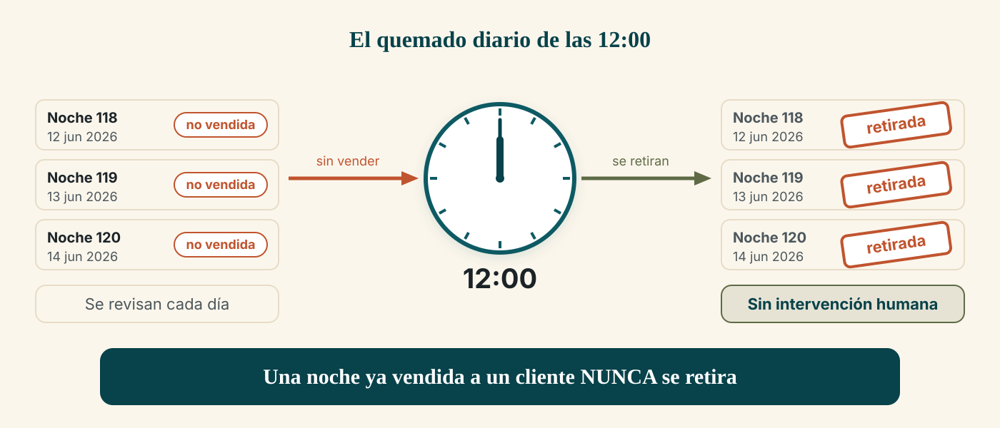
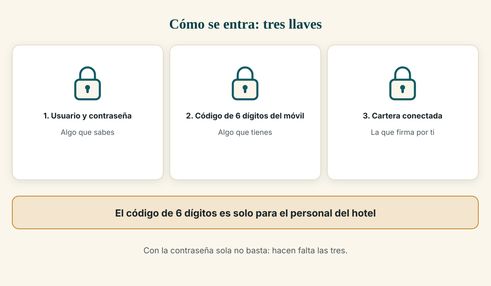
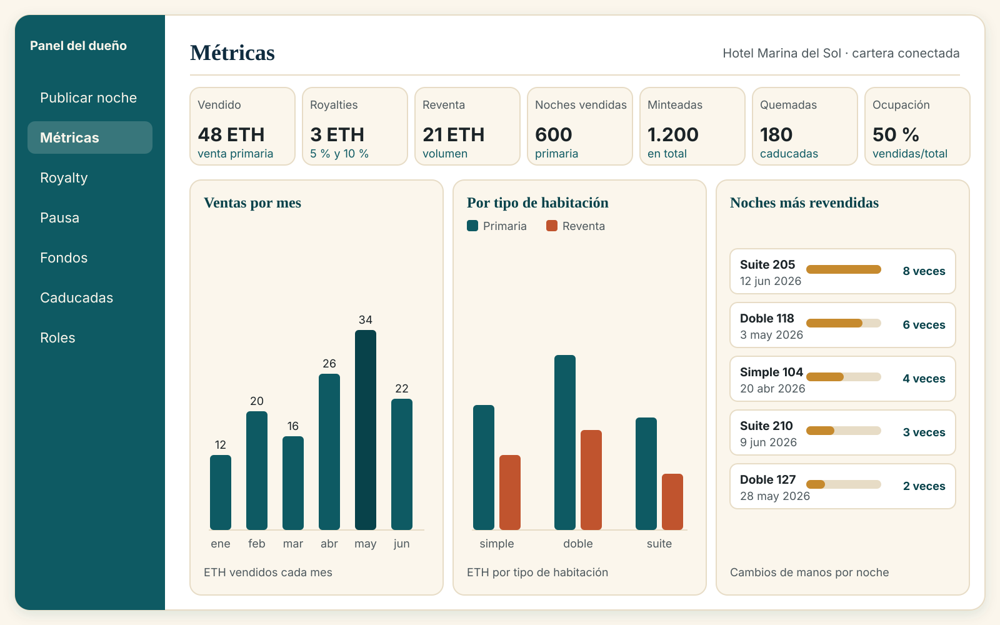

1. Qué es esto, en una página
Tu hotel tiene 50 habitaciones: 101 a 130 en la planta baja y 201 a 220 en la primera planta. Hay tres tipos de habitación: simple, doble y suite.
En este sistema, cada noche de cada habitación se vende como una ficha digital única. Esa ficha se llama token y vive en una blockchain (una especie de libro de cuentas público y compartido, donde lo que se apunta no se puede borrar ni cambiar). La ficha cumple la misma función que una reserva: quien la tiene, tiene esa noche.
Lo que cambia respecto a una reserva normal:
- Vendes tú, sin intermediarios. La web es tuya; no hay comisión de portales.
- El cliente paga con una cartera de cripto (wallet: el programa del móvil que guarda su dinero digital y firma sus pagos). No necesita darse de alta en nada.
- El cliente puede revender su noche a otra persona en tu propia web, y tú te llevas un porcentaje cada vez que la noche cambia de manos: 5 % en simple y doble, 10 % en suite. Ese porcentaje se fija al dar de alta la noche y ya no se puede cambiar.
- El check-in queda anotado en la cadena. Recepción escanea el resguardo del cliente y la noche queda marcada como usada, de forma que el mismo resguardo no sirve dos veces.
- Las noches que no se venden se retiran solas. Todos los días a las 12:00 (hora del hotel) el sistema retira las noches del hotel que ya han caducado y no se vendieron. Tú no tienes que hacer nada. Las noches que ya compró un cliente nunca se retiran.
La compra es anónima: al comprador no se le pide nombre, DNI ni correo. Lo único que puede pedirse es un correo, y solo si él quiere recibir el resguardo por email o avisos.
El registro de viajeros (la obligación del RD 933/2021) no lo hace esta web. Se sigue haciendo en el mostrador, como hoy. La web no guarda DNI ni nombres.

2. Cómo entrar al panel del dueño
El panel está en la dirección del hotel seguida de /admin.
Se entra con tres cosas (es lo que se llama doble factor: algo que sabes y algo que tienes):
- Usuario y contraseña que se te entregaron al dar de alta tu acceso.
- Un código de 6 dígitos que genera una aplicación de autenticación en tu móvil (una app tipo «Authenticator», que cambia el código cada 30 segundos).
- La primera vez, además, hay que conectar la cartera del hotel en la barra superior. Esa cartera es la que firma las operaciones; la pantalla lo pide y te guía.
Pasos:
- Abre
/adminen el navegador. - Escribe tu usuario y tu contraseña y pulsa Continuar.
- Escribe el código de 6 dígitos de la aplicación y pulsa Entrar.
- Si la pantalla pide conectar la cartera, pulsa Conectar wallet y acepta en el móvil.
- Verás el menú lateral con las secciones: Publicar noche, Métricas, Royalty, Pausa, Fondos, Caducadas y Roles.
Si te equivocas o algo va mal
| Lo que ves | Qué significa | Qué hacer |
|---|---|---|
| «Usuario o contraseña incorrectos.» | Has tecleado mal el usuario o la contraseña. | Vuelve a intentarlo con calma. |
| «El código TOTP o de rescate no es válido.» | El código de 6 dígitos ya ha caducado o es de otro momento. | Espera a que la app muestre uno nuevo y escríbelo rápido. |
| «Cuenta bloqueada temporalmente por intentos fallidos. Reinténtalo en 15 minutos.» | Demasiados intentos seguidos. Es una protección. | Espera 15 minutos y vuelve a entrar. |
| «Tu sesión ha caducado. Vuelve a iniciar sesión.» | Por seguridad, la sesión dura 15 minutos. | Vuelve a entrar con usuario, contraseña y código. |
| «Tu sesión no incluye el rol necesario para este panel.» | Tu usuario no tiene permiso para esa sección concreta. | Usa el usuario que sí lo tenga. |
Si pierdes el móvil del código
Esto es lo más importante que debes saber de este apartado:
- Guarda los códigos de rescate que se te dieron al dar de alta el acceso. Son códigos de un solo uso que sirven cuando no tienes el móvil. La pantalla de acceso los acepta: pulsa Usar un código de rescate en lugar del código de 6 dígitos. También te dice cuántos te quedan («Códigos de rescate disponibles: …»): si quedan pocos, pide que te generen más.
- Si no tienes el móvil ni los códigos de rescate, no hay forma de entrar: pide que se vuelva a dar de alta tu acceso (es un trámite del equipo técnico, no un botón del panel).
- Anota en un sitio seguro quién tiene copia de esos códigos. No los dejes solo en el móvil que vas a perder.

3. Cómo dar de alta noches (publicar una noche a la venta)
Se hace en la sección Publicar noche.
- Entra en
/adminy elige Publicar noche en el menú. - Rellena los tres datos:
- Habitación: un número entre 101 y 130 o entre 201 y 220. Si escribes una habitación que no existe, el sistema responde «La habitación no está en el maestro.» y no publica nada.
- Fecha de la noche: el día que se puede dormir. Una fecha pasada o mal formada se rechaza con «Fecha de calendario inválida.».
- Precio (ETH): el precio de venta de esa noche. ETH es la moneda de la red.
- Pulsa Publicar noche.
- El sistema te pide otra vez el código de 6 dígitos («Re-confirmación MFA requerida»). Esto es a propósito: dar de alta inventario mueve dinero, así que se confirma dos veces. Escríbelo y pulsa Autorizar y emitir.
- Firma en la cartera cuando el móvil te lo pida.
- La pantalla confirma: «Noche publicada: token …». Ese número es el identificador de la noche en la cadena; guárdalo si te lo pide alguien del equipo.
Detalles útiles:
- Puedes publicar en lote. El formulario tiene una opción de minteo masivo para dar de alta varias habitaciones del mismo tipo de una vez, en lugar de una a una.
- Si la confirmación tarda, la pantalla avisa de que la noche queda registrada como pendiente de anclaje y no aparecerá en el catálogo hasta que la operación se confirme. No la vuelvas a publicar: espera un momento y recarga.
- No se puede publicar dos veces la misma noche de la misma habitación y fecha.
4. Cómo leer el panel (qué significa cada cifra)
En Métricas tienes el resumen del negocio. Las cifras se calculan a partir de lo que ocurre en la cadena, no de una hoja de cálculo aparte.
Las cifras de arriba
| Cifra | Qué significa |
|---|---|
| Vendido (primaria) | Total en ETH de las noches que has vendido tú desde el catálogo. Es tu venta directa. |
| Royalties acumulados | Total en ETH que has ganado solo por las reventas: tu 5 % o 10 % de cada cambio de manos. |
| Volumen de reventa | Total en ETH que se han pagado entre clientes al revender noches. No es dinero tuyo: es el tamaño del mercado de segunda mano. No lo sumes a tus ingresos. |
| Noches vendidas | Cuántas noches has vendido tú (venta primaria). |
| Noches minteadas | Cuántas noches has dado de alta en total. |
| Noches quemadas | Cuántas noches se han retirado por caducar sin venderse. |
| Ocupación comercial | Porcentaje: noches vendidas dividido entre noches dadas de alta. Si has publicado 100 noches y has vendido 30, la ocupación es del 30 %. |
Las tres gráficas
- Ventas por mes: barra a barra, cuánto se ha vendido cada mes natural. Cada noche cuenta en el mes en que se vendió. Se agrupa con la hora del hotel (Europe/Madrid), así que una venta de madrugada cuenta en el día correcto.
- Desglose por tipo de habitación: cuánto se ha vendido en simple, en doble y en suite, separando tu venta directa de la reventa. Aquí ves qué tipo de habitación tira más.
- Noches más revendidas: un ranking de las noches (habitación y fecha) que más veces han cambiado de manos. Si una fecha se revende mucho, es señal de que estaba barata.
Todas las gráficas vienen acompañadas de una tabla con los mismos números. Si prefieres los números a los dibujos, o si necesitas leerlos con ayuda, están ahí.
Otras dos cosas del panel
- Exportar informe CSV: descarga un fichero con las cifras para abrirlo en una hoja de cálculo. Sirve para llevarlo a tu gestor.
- Si alguna cifra no se puede leer, la pantalla lo dice («No se pudieron cargar las métricas») en lugar de mostrar ceros que parecerían buenos datos.

5. Cómo se cobra
El dinero de las ventas y de los royalties entra en el contrato (la pieza que vive en la cadena y gobierna las noches). Para pasarlo a la tesorería del hotel se hace desde la sección Fondos:
- Entra en Fondos.
- Verás dos datos: Balance del contrato (lo que hay en total) y Retirable ahora (lo que se puede sacar en este momento). No son lo mismo: el sistema reserva la parte que ya está prometida a clientes que han revendido su noche y aún no han cobrado.
- Comprueba la Tesorería destino: es la cartera que recibirá el dinero. Mírala siempre antes de firmar.
- Pulsa Retirar a tesorería y confirma. La pantalla avisa de que la operación transfiere dinero de verdad y no se puede deshacer.
- Firma en la cartera.
Si no hay nada retirable, la pantalla lo dice: «No hay saldo retirable en este momento.». Puede pasar aunque el balance bruto se vea alto, porque ese dinero puede estar reservado para pagos pendientes de reventas. Es normal, no es un error.
Si el sistema está en pausa, retirar sigue permitido. Es la vía para sacar el dinero aun con todo lo demás detenido.
6. Cómo parar todo si algo va mal
La sección Pausa es el botón de emergencia. Sirve para detener las operaciones si detectas algo raro: una reventa a un precio absurdo, un error, una duda seria.
- Entra en Pausa. La pantalla te dice si el sistema está ACTIVO o EN PAUSA.
- Pulsa Pausar. La pantalla te avisa de lo que va a pasar: se bloquean compras, reventas, altas de noches y retiradas de noches.
- Firma en la cartera.
Qué ocurre con el sistema en pausa:
- Los clientes no pueden comprar y los recepcionistas no pueden hacer check-in: la pantalla de recepción avisa de que el contrato está en pausa y retira el botón.
- Lo que ya está vendido no se pierde. Las noches siguen siendo de sus dueños y los resguardos siguen siendo válidos para cuando reanudes.
- Retirar fondos sigue funcionando.
Para volver a la normalidad: entra otra vez en Pausa y pulsa Reanudar.
7. Qué NO debes hacer
- No compartas tu contraseña con nadie, ni por WhatsApp, ni por correo. Cada persona que necesite entrar debe tener su propio usuario.
- No guardes la clave de la cartera del hotel en el móvil ni en una nota del teléfono, ni la escribas en un chat. Quien tenga esa clave puede mover el dinero. Hoy no hay acordada una política de custodia: es la decisión pendiente más importante (ver apartado 8).
- No mandes por correo ni por mensaje los códigos de rescate del acceso.
- No firmes una operación sin leerla. La cartera te muestra siempre lo que vas a firmar; si no coincide con lo que esperabas, cancela.
- No borres ni reinstales la aplicación del código de 6 dígitos sin haber comprobado antes que tienes los códigos de rescate a mano.
- No publiques noches con precios provisionales pensando en cambiarlos luego: el precio de venta de cada noche se fija al publicarla. Lo que sí puedes ajustar es el suelo del precio de reventa (el mínimo por el que se puede revender), y ese cambio no revisa los anuncios que ya están publicados.
- No prometas a nadie que puede vender al público todavía. Hoy la red es de pruebas.
8. Límites de hoy y decisiones que te tocan
Esto es lo que el sistema no hace o no garantiza hoy. Preferimos que lo leas aquí y no que te sorprenda.
Límites técnicos conocidos
| Límite | Qué significa para ti |
|---|---|
| Red de pruebas, no de venta al público | Todo funciona, pero sobre una red privada de demostración. Vender a clientes reales exige un paso más (red pública, revisión legal y presupuesto de gastos de red). |
| Aguanta 50 compradores a la vez | Medido y cumple. Con 200 a la vez en un solo servidor no aguanta (falla alrededor de un tercio de las peticiones). Se arregla dimensionando la base de datos y poniendo una caché delante. |
| Pago con tarjeta no operativo | Solo se puede pagar con cartera de cripto. El pago con tarjeta está diseñado pero no funciona hoy. |
| Pases de Apple y Google Wallet | Necesitan credenciales de tu parte que aún no están. Hoy el resguardo es el código QR o el código impreso. |
| Fotos provisionales | Las fotos de las habitaciones del catálogo son de relleno hasta que lleguen las tres definitivas (simple, doble y suite). |
| Avisos al móvil | Funcionan, pero el cliente tiene que aceptarlos, y son un extra: si fallan, la venta no se ve afectada. |
| El contrato no se puede corregir en caliente | Es inmutable por diseño: un cambio de reglas obliga a desplegar un contrato nuevo y volver a sincronizar. Es una garantía, pero también significa que "cambiar una regla" no es un ajuste de cinco minutos. |
Decisiones que solo puedes tomar tú
- La red: seguir en la red de pruebas para demostrar y validar, o dar el salto a una red pública (con su coste, su verificación y su dictamen legal). Es la decisión que condiciona precio y plazo.
- La economía de la reventa: confirmar el suelo de 0,01 ETH y los porcentajes inmutables 5 % (simple y doble) / 10 % (suite) como política definitiva.
- La custodia de las claves: quién guarda la clave de la cartera del hotel y con qué política. Es el riesgo más alto de todo el sistema.
- El reparto de tipos por habitación: hoy el sistema asigna 101–115 como simple, 116–130 como doble y 201–220 como suite. Confirma que ese reparto es el real.
- Las fotos definitivas de los tres tipos de habitación.
- El programa de gestión hotelera (PMS): cuál usas y si permite conectarse. Si no lo permite, el registro de viajeros se sigue haciendo a mano, como hoy, y la web no cambia nada.
- Los firmantes de la caja fuerte compartida (se propuso un esquema de 3 llaves de las que bastan 2: tú y dos personas de confianza).
Manual del cliente · Hotel Marina del Sol · escrito para leerse sin conocimientos técnicos.